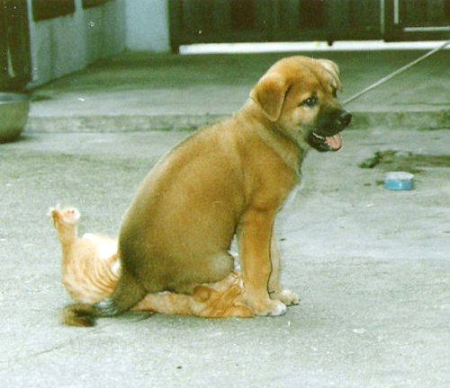

Supremacía Perruna
Hola!
Esta página está hecha exclusivamente para demostrarle a Ivo que los perros son mejores que los gatos!
Evidencia científica
Aquí se pueden observar diferentes artículos que testifican fehacientemente lo que ya muchos sabemos,...los perros son indiscutiblemente, objetivamente y cientificamente superiores a los felinos
Aquí se pueden observar diferentes artículos que testifican fehacientemente lo que ya muchos sabemos,...los perros son indiscutiblemente, objetivamente y cientificamente superiores a los felinos
culooooooooooooooooooo
Wikipedia dice...
El perro (Canis familiaris o Canis lupus familiaris dependiendo de si se lo considera una especie por derecho propio o una subespecie del lobo),123 llamado perro doméstico o can,4 y en algunos lugares coloquialmente llamado chucho,5 tuso,6 choco,7 entre otros; es un mamífero carnívoro de la familia de los cánidos, que constituye una especie del género Canis.89 En 2013, una población mundial estimada de perros estaba entre setecientos millones y novecientos ochenta y siete millones.1011 Su tamaño (o talla), su forma y pelaje es muy diverso según la raza. Posee un oído y olfato muy desarrollados, siendo este último su principal órgano sensorial. Su longevidad media es de diez a trece años,121314 dependiendo de la raza. El perro doméstico proviene de un grupo ancestral común que data de hace aproximadamente treinta mil años y desde entonces se ha extendido a todas partes del mundo.15 Los primeros restos fósiles de perros enterrados junto con humanos fueron encontrados en Israel y datan de hace unos doce mil años.16 Desde entonces, los perros y los humanos han evolucionado conjuntamente, tanto en las culturas africanas y euroasiáticas, como en las que poblaron América y se mantuvieron sin contacto con aquellas hasta el siglo XV.17 Los perros comparten el entorno, los hábitos y el estilo de vida humanos, como las dietas ricas en cereales y almidón. La alimentación inadecuada, así como el uso de antibióticos, son la causa del desarrollo de muchas enfermedades inflamatorias e inmunológicas. Unas cuatrocientas enfermedades del perro tienen una equivalente humana, destacando especialmente la enfermedad de Alzheimer y otros trastornos neurológicos, así como cánceres, enfermedades autoinmunes y enfermedades cardiovasculares.18192021 Tienen una gran relación con los humanos, entre tales relaciones se incluyen fungir como animales de compañía, animales de guardia, perros de trabajo, perros de caza, galgos de carrera, perros guía, perros pastores o perros boyeros.